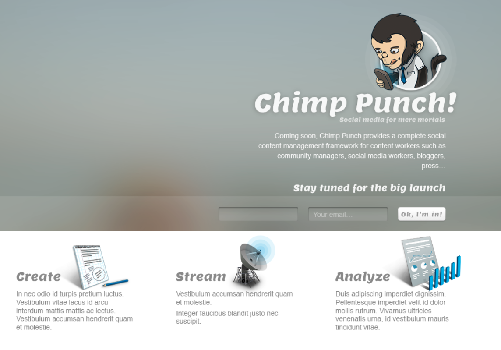
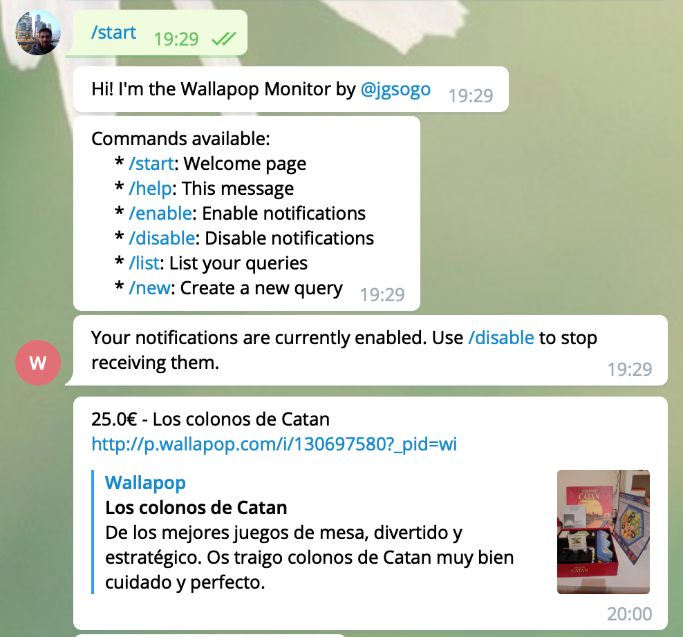
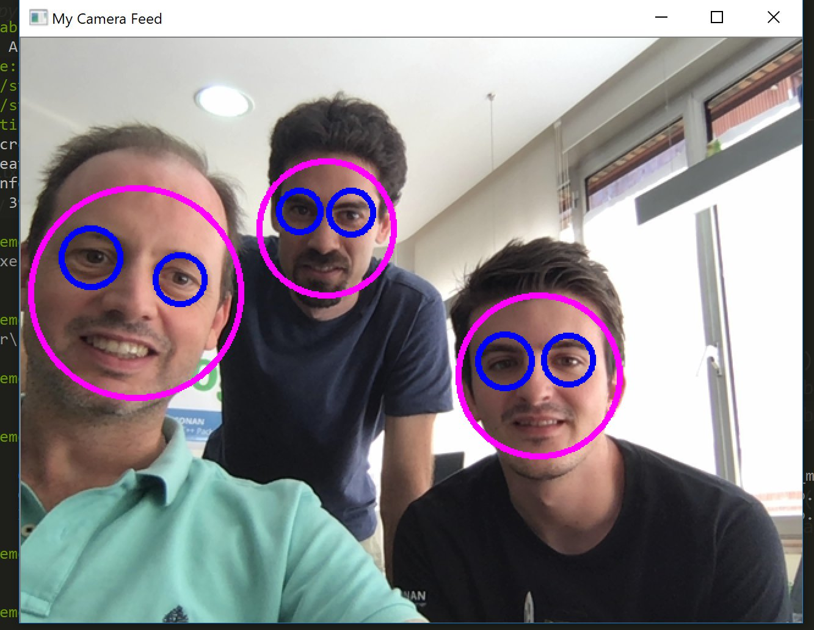
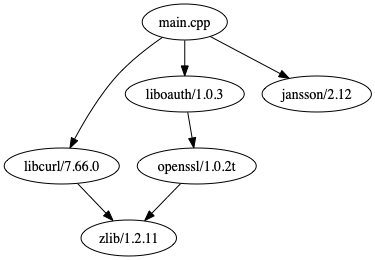

Javier G. Sogo | Senior software developer |
Javier G. Sogo | Senior software developer |
Conan
Package management in C++
December 11th, 2019
C++ Programmer Meetup (BCN)
Javier García Sogo
C++/Python/DevOps... engineer
@jgsogo
About me

Javier G. Sogo
Software | Conan.io | JFrog™
 jgsogo
jgsogo
 @jgsogo
@jgsogo
C++ experience (+10y)*
UPM intern
- It's own framework
xxx::shared_ptr- SVN monorepo
- without a CI
- VS projects
- ~100 projects
Quant developer
- It's own framework
yyy::shared_ptr- SVN monorepo
- CI
- CMake
- ~400 projects
Side projects!
Let's do some WWW
C++ PHP Python
NLP
Python
- Web (backend)
- Scraping
- Orchestration
- Data preparation
- DB layer
C++
- Read CSV
- Process data
- Write CSV
Twitter bot
Scrape, classify (NLP), monitor, tweet
Telegram bot
Commands, scrape, bot
ADIF + Renfe
C++ side projects
All speculative
make && sudo make install
?
I want my job done!
Act. II
I had a dream
Face recognition
Face recognition
Find a nice how-to
It uses opencv/3.4.5
Piece of cake!
Posting to Twitter
Here it is something promising
C libraries, different build systems,...
Child's play!
My dream
Someone else's work
Act. III
Conan, C/C++ package manager
Conan.io
Development team:


Join us! We are hiring!
Main features
Reuse binaries (if you want)
Distributed as Git
3rd parties & your libraries
Non intrusive
Key components
Reference
Package ID
name/version:package_id
Reference
'name' and 'version' of the library
boost/1.71.0
openssl/1.1.1d
*Use only 'name/version@user/channel' to avoid collisions
*Recipes are versioned using 'name/version#recipe_revision'
Package ID
Unique identifier of the binaries
Linux, x86_64, GCC 6, Release, shared=True,...:
openssl/1.1.1d:008f1a2b119556f550c11...
Linux, x86_64, GCC 6, Debug, shared=False,...:
openssl/1.1.1d:160c0f76fcf1ad0d80837...
Other components
- Profiles
- Generators
- Build helpers
example!
Hello world! application
[requires]
hellolib/0.1
fmt/6.0.0
using CMake
[generators]
cmake
cmake_find_package
Graph of dependencies
Contribute your packages
conanfile.py
1) Declare your settings and dependencies
from conans import ConanFile, CMake
class MyRecipe(ConanFile):
name = "name"
version = "version"
settings = "os", "arch", "compiler", "build_type"
requires = ""
generators = "cmake", "cmake_find_package"
conanfile.py
2) Where to get the sources
from conans import ConanFile, CMake, tools
class MyRecipe(ConanFile):
...
# Use magic if recipe and sources are in the same repository
scm = {"type": "git",
"revision": "auto",
"url": "auto"}
def source(self):
# Write your own function
tools.get(url="...", sha1="...")
os.rename("name-version", "source_folder")
conanfile.py
3) How to build your library
from conans import ConanFile, CMake, tools
class MyRecipe(ConanFile):
...
def build(self):
cmake = CMake(self)
cmake.configure()
cmake.build()
conanfile.py
4) What to package
from conans import ConanFile, CMake, tools
class MyRecipe(ConanFile):
...
def package(self):
cmake = CMake(self)
cmake.configure()
cmake.install()
self.copy("LICENSE.txt", dst="licenses", src=self._source_subfolder)
Publish your package (CI)
Create/Test the package
conan create path/to/conanfile.py --profile=macos-11-release
Upload to your server
conan upload name/version@ --all --remote=my-private
Act. IV
Conan at your company
Major pains
- Divide your monolith
- Developers: less to compile
- DevOps: reduce CI times
- Trazability and reproducibility
What Conan offers
- Take advantage of community contributed recipes
- Package your own libraries
- Keep using your existing build system
- Integrate with Artifactory, all your binaries together
C++ ecosystem is ready
and you?
Conan
Package management in C++
December 11th, 2019
C++ Programmer Meetup (BCN)
Javier García Sogo
C++/Python/DevOps... engineer
@jgsogo